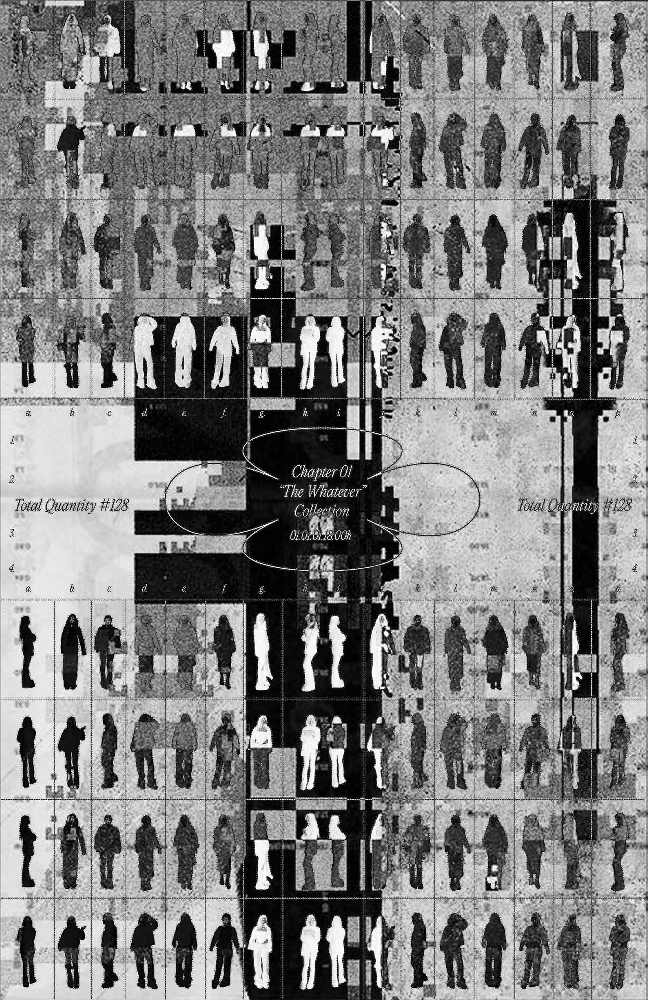

back
The Whatever
Finding my own sense of fashion has been a long journey. After trying countless styles and chasing trends, I eventually grew tired of it all.
Starting in my senior year of high school, I committed to wearing only black or white outfits. While I’m still not sure what led me to this decision, it has since become a core part of my identity.

Although fashion shouldn't define a person entirely, I take pride in being recognized through my outfits.
This project showcases the different silhouettes and styles I've embraced, reflecting my dedication to my personal sense of fashion.
